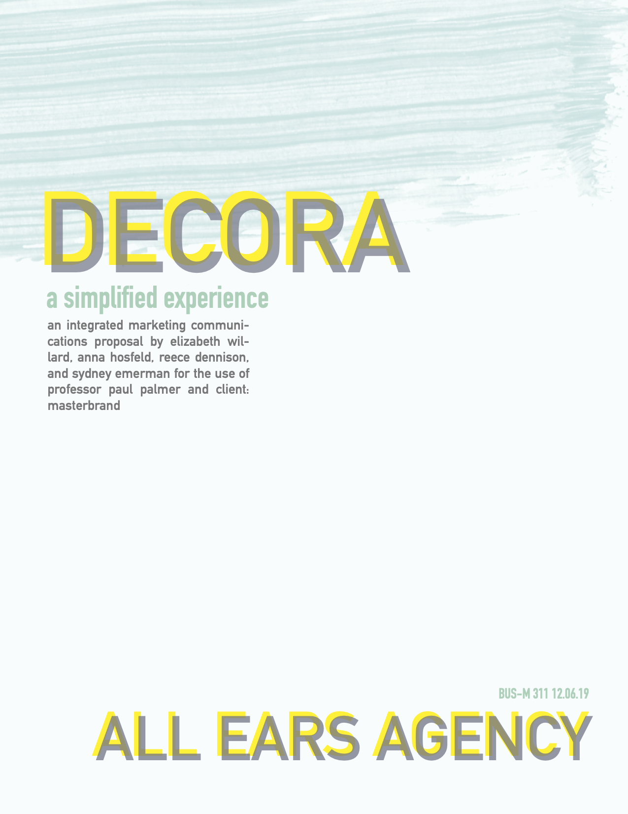
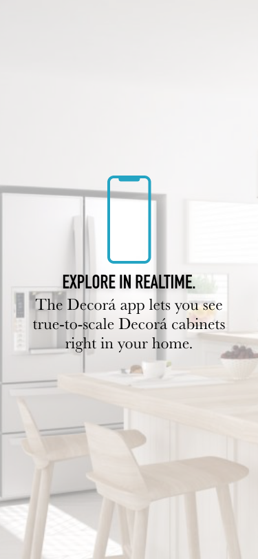
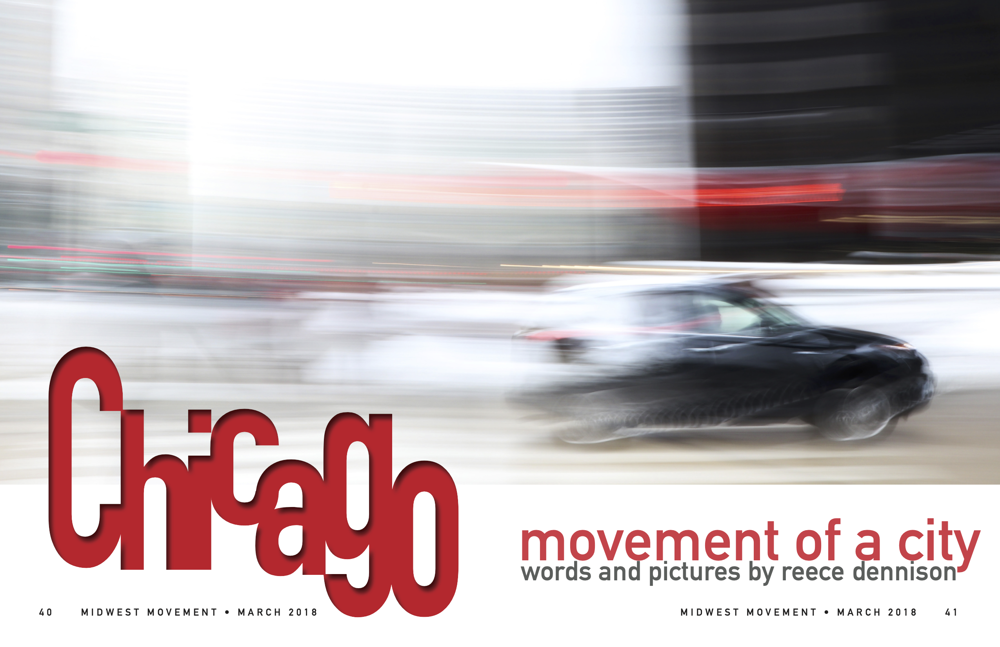
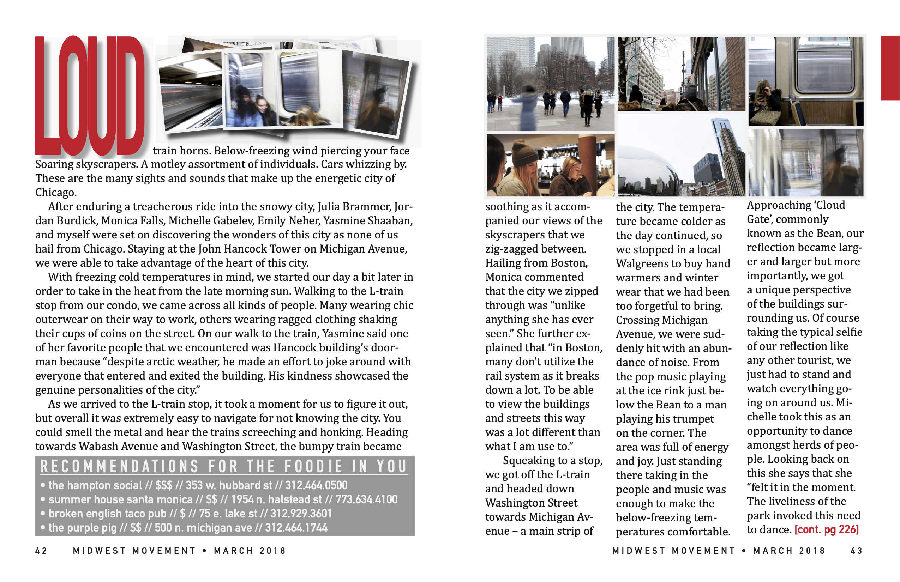

Because I like to show, not just tell.
Skills, Tools, & Knowledge.
Adobe Creative Cloud. Web Content Writing. Microsoft Excel. SEO. HTML. CSS. AP Style. Copywriting/Editing. Google Analytics. PR Writing. Social Media. Final Cut Pro. Media Outreach. Business & Communications Law.
This site.
To create a site that perfectly illustrates my sunny-disposition, creative mind, and work ethic, I decided to design it myself. Every design decision was made with intention to reflect this so that people may fully understand me.
Tools: HTML/CSS, SEO Strategies, GitHub
Mock AR Mobile App for Masterbrand
For my IMC class, our team was tasked to help Masterbrand differentiate their premium brands and attract and retain more premium designers. Our team's strategy was to simplify the purchasing process by implementing a new digital experience. Below, is a copy of our cover page, as well as a mock AR application that I designed.
Tools: Adobe XD, Adobe InDesign
 Awards Badges for Clutch.co
Every few months, several companies across the globe are awarded by Clutch.co for their excellence within their respective industries. I helped create 'badges' for companies to utilize in press releases, on their websites, and other marketing campaigns.
Tools: Adobe Illustrator

Visual Communications Magazine Project
For this introductory design course that I took sophomore year, I was tasked to create a compelling magazine spread from our photography unit.
Tools: Adobe InDesign
 Articles for Clutch.co
I wrote several articles that incorporated SEO practices for companies that worked with Clutch.co to share on their blogs.
- What You Should Know About Outsourcing Your Digital Marketing
- Situational Leadership: What is it and How Does it Make Us Better Managers?